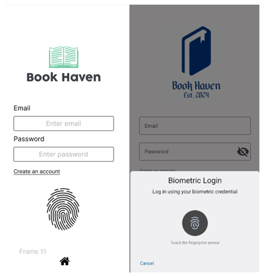
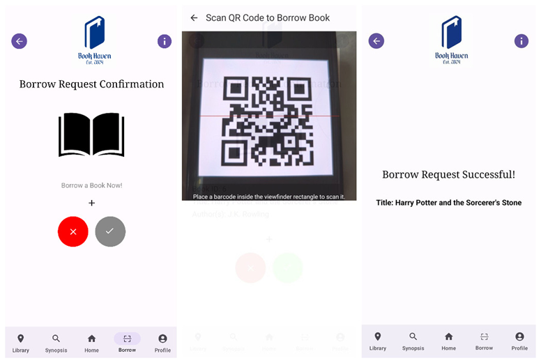
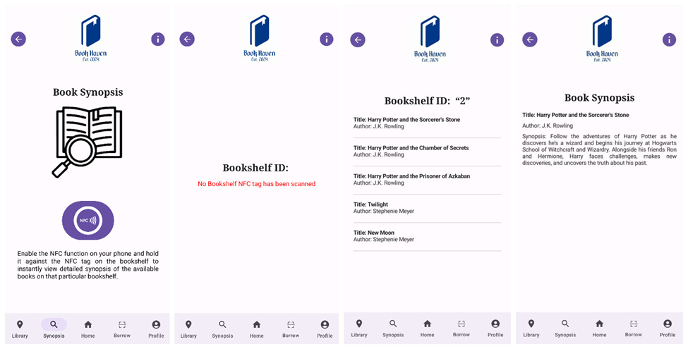
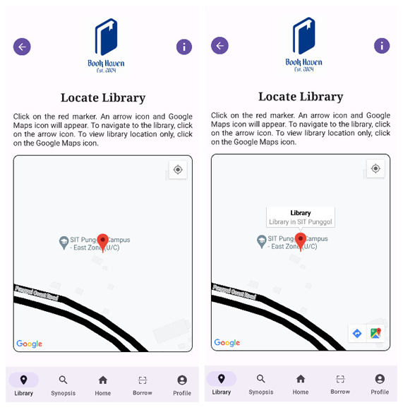

← Go Back
Other Projects
BookHaven Mobile Application
BookHaven is a modern, user-centric mobile application designed to streamline and elevate the university library experience.
By leveraging AI-driven integrations and native mobile hardware capabilities such as NFC, GPS, and biometrics, the app modernizes traditional library processes. It empowers students to seamlessly navigate the campus, instantly access book synopses, borrow books via QR codes, track their loans, and manage library fees, creating a future-ready and highly efficient academic resource platform.
Key Features
- Biometric Authentication: Secure, fuss-free login utilizing the device's native fingerprint/biometric capabilities to protect user accounts.
- NFC Book Synopsis: Instantly retrieve and view book summaries by simply tapping the mobile device against NFC tags placed on library bookshelves.
- Real-Time Campus Navigation: Integrated GPS and interactive campus maps to help students, especially newcomers, easily locate the library and navigate the campus in real-time.
- QR Code Self-Service Borrowing: A streamlined book borrowing process that allows users to check out books instantly by scanning unique QR codes on the book spines.
- AI-Powered Recommendations: Personalized reading suggestions generated via the ChatGPT API, analyzing the user's past loan history to recommend relevant books.
- AI-Powered Recommendations: Loan Tracking & Fee Management: Real-time dashboards to track borrowed books and due dates, complete with an automated overdue fee calculator and secure credit card payment validation.
Technologies Used
Language & Platform: Kotlin, Android SDK
Architecture & UI: MVVM, Jetpack Compose, Hilt, StateFlow
Backend & Database: Firebase (Authentication, Realtime Database)
APIs & Hardware: Google Maps API, ChatGPT API, Android NFC API, Biometric Authentication
Biometric Login

Borrow Books via QR code Function

Book Synopsis via NFC tag Function

Find Library via GPS Function
